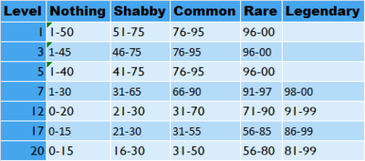
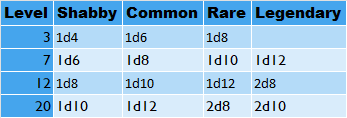
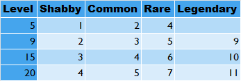
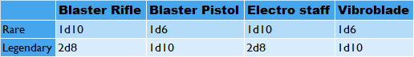

Engineer
Masters of innovation and ingenuity, engineers thrive in the heart of technological chaos. Whether repairing critical systems, building devastating explosives, or creating loyal droid companions, engineers are the architects of victory. Their expertise in machinery and mechanics allows them to adapt to any battlefield, turning scrap into solutions and enemies into opportunities.
Hit points
Hit Dice: 1d8
Hit Points at 1st level: 8 + your Constitution modifier
Hit points at Higher Levels: 1d8 (or 5) + your Constitution modifier per Engineer level after 1st
Proficiencies
Armor: Light Armor
Weapons: Blasters, Vibroblades
Tools: Demolition Kit, Engineering Kit
Saving throws: Dexterity, Intelligence
Skills: Sleight of hand, Survival, Nature, Pick 1 from: Athletics, Insight, Intimidation, Medicine, Perception, Stealth
Equipment
Chose an E-5 blaster pistol, or a Vibrosword. Engineering Kit, light armor, and a Stun gun. 150 credits.
Ability Score Improvments
When you reach 4th level, and again at 8th, 12th, 16th, and 19th level, you can increase one ability score of your choice by 2 or increase 2 ability scores by one. You cannot increase a skill above 20.
Scavenge
Explosive Construction
Modify Equipment
Construct Weapons
Skills
Level 1: Scavenge
You may attempt to scavenge pieces of scrap from non-functional electrical equipment. chances for different scraps are listed in the table.
Level 3: Droid Companion
When you become an engineer, you construct (or buy) a droid companion. This droid companion can be sized small or medium. When entering combat, the droid has its own initiative rolls, actions, bonus actions etc. It has an AC of 8 + your engineer level, and its HP is 1d4 per engineer level It must, however, be given a weapon if it is expected to join combat.
Level 3: Explosive Construction
During a rest, you can choose to construct up to 3 explosives. Each bomb costs 2 scraps of the same rarity. The damage is listed in the table.
>Level 5: Modify Equipment
Outside of combat, you can modify and weapons or equipment. doing this adds the corresponding number to your damage rolls with weapons, or to your AC if armor. the bonuses are listed in the table.
Level 7: Hack Droid
Once per short rest, you or your droid can hack a stunned droid, turning it to your side for 2 turns. After then, the droid regains control. At 12th level to droid stays on your side until the end of combat.
Level 9: Upgrade Vehicle
Outside of combat, you can upgrade a vehicle’s armor or weapons. See modification chart from modify equipment for stat changes.
Level 12: Construct Turret
As your action, use 3 scraps that are rare or legendary, to create a turret, that does 2d12 if you used rare scrap, or 3d12 if you used legendary scrap.
Level 17: Construct Weapons
Outside of combat, you can use 2 scraps or rare or legendary ratings to create a basic weapon. See the table for stats.
Level 20: Making Droids
Outside of combat you can create a droid using 4 scraps of the same rarity. If you use rare scraps, the droid size is small. If you use legendary scraps, the droid size is large.